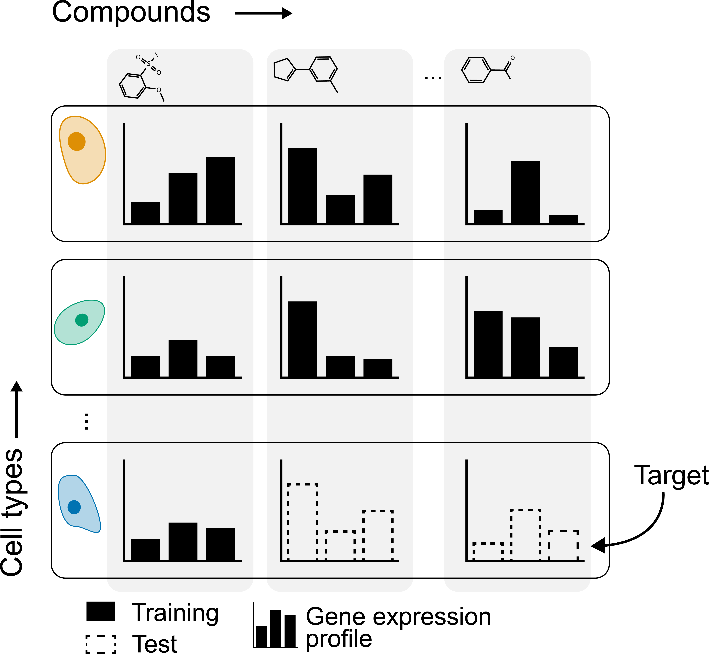

if [[ ! -f data/sc_counts_reannotated_with_counts.h5ad ]]; then
aws s3 cp \
--no-sign-request \
s3://openproblems-bio/public/neurips-2023-competition/sc_counts_reannotated_with_counts.h5ad \
data/sc_counts_reannotated_with_counts.h5ad
fi2 Use-case
The provided dataset is a perturb-seq dataset that was generated as part of an OpenProblems competition on predicting how small molecules change gene expression in different cell types (“Open Problems Kaggle Competition - Single Cell Perturbations” 2023). The winners of the competition have since been added to the OpenProblems Perturbation Prediction benchmarking task (“OpenProblems Perturbation Prediction Benchmark” 2024).
As part of the competition, competitors received the differential gene expression (DGE) of genes in cell types treated with different small molecules, and had to predict the DGE of genes in cell types of which some small molecules were withheld. The task is illustrated in the figure below Figure 2.1.

The dataset consists of single-cell RNA-seq data from 4 cell types treated with 144 small molecules in 3 replicates. The DGE matrix (which competitors received) was in the following steps:
- Retrieve annotated single-cell gene expression matrix
- Compute pseudobulk for each cell type and small molecule
- Compute differential expression between each small molecule and control for each cell type
We will use the dataset to illustrate how to perform the following steps.
2.1 1. Retrieving the data
The dataset has since been uploaded to SRA (“SRA SRP527159” 2024), will be uploaded to GEO, and is currently available from S3 (“OP3 H5AD on S3” 2024).
If you haven’t already, you can download the dataset from S3 using the following command:
2.2 2. Loading the data
The dataset is stored in an AnnData object, which can be loaded in Python as follows:
import anndata as ad
adata = ad.read_h5ad("data/sc_counts_reannotated_with_counts.h5ad")
adataAnnData object with n_obs × n_vars = 298087 × 21265
obs: 'dose_uM', 'timepoint_hr', 'well', 'row', 'col', 'plate_name', 'cell_id', 'cell_type', 'split', 'donor_id', 'sm_name', 'control', 'SMILES', 'sm_lincs_id', 'library_id', 'leiden_res1', 'group', 'cell_type_orig', 'plate_well_celltype_reannotated', 'cell_count_by_well_celltype', 'cell_count_by_plate_well'
var: 'highly_variable', 'means', 'dispersions', 'dispersions_norm'
uns: 'cell_type_colors', 'celltypist_celltype_colors', 'donor_id_colors', 'hvg', 'leiden_res1_colors', 'log1p', 'neighbors', 'over_clustering', 'rank_genes_groups'
obsm: 'HTO_clr', 'X_pca', 'X_umap', 'protein_counts'
obsp: 'connectivities', 'distances'The same code can be run in R using the anndata package (not run):
library(anndata)
adata <- read_h5ad("data/sc_counts_reannotated_with_counts.h5ad")
adata2.3 3. Subset data
Since the dataset is large, we will subset the data to a single small molecule, control, and cell type.
sm_name = "Belinostat"
control_name = "Dimethyl Sulfoxide"
cell_type = "T cells"
adata = adata[
adata.obs["sm_name"].isin([sm_name, control_name]) &
adata.obs["cell_type"].isin([cell_type]),
].copy()
adata.write_h5ad("data/sc_counts_subset.h5ad")We will also subset the genes to the top 2000 most variable genes.
adata = adata[:, adata.var["highly_variable"]].copy()2.4 4. Compute pseudobulk
import pandas as pdCombine data in a single data frame and compute pseudobulk
combined = pd.DataFrame(
adata.X.toarray(),
index=adata.obs["plate_well_celltype_reannotated"],
)
combined.columns = adata.var_names
pb_X = combined.groupby(level=0).sum()<string>:1: FutureWarning: The default of observed=False is deprecated and will be changed to True in a future version of pandas. Pass observed=False to retain current behavior or observed=True to adopt the future default and silence this warning.Construct obs for pseudobulk. Use ‘plate_well_celltype_reannotated’ as index and make sure to retain the columns ‘sm_name’, ‘cell_type’, and ‘plate_name’:
pb_obs = adata.obs[["sm_name", "cell_type", "plate_name", "well"]].copy()
pb_obs.index = adata.obs["plate_well_celltype_reannotated"]
pb_obs = pb_obs.drop_duplicates()Create AnnData object:
pb_adata = ad.AnnData(
X=pb_X.loc[pb_obs.index].values,
obs=pb_obs,
var=adata.var,
)Store to disk:
pb_adata.write_h5ad("data/pseudobulk.h5ad")2.5 5. Compute DE
library(anndata)
library(dplyr, warn.conflicts = FALSE)
pb_adata <- read_h5ad("data/pseudobulk.h5ad")Select small molecule and control:
sm_name <- "Belinostat"
control_name <- "Dimethyl Sulfoxide"Create DESeq dataset:
# transform counts matrix
count_data <- t(pb_adata$X)
storage.mode(count_data) <- "integer"
# create dataset
dds <- DESeq2::DESeqDataSetFromMatrix(
countData = count_data,
colData = pb_adata$obs,
design = ~ sm_name + plate_name,
)Warning: replacing previous import 'S4Arrays::makeNindexFromArrayViewport' by
'DelayedArray::makeNindexFromArrayViewport' when loading 'SummarizedExperiment' Note: levels of factors in the design contain characters other than
letters, numbers, '_' and '.'. It is recommended (but not required) to use
only letters, numbers, and delimiters '_' or '.', as these are safe characters
for column names in R. [This is a message, not a warning or an error]Run DESeq2:
dds <- DESeq2::DESeq(dds)estimating size factors Note: levels of factors in the design contain characters other than
letters, numbers, '_' and '.'. It is recommended (but not required) to use
only letters, numbers, and delimiters '_' or '.', as these are safe characters
for column names in R. [This is a message, not a warning or an error]estimating dispersionsgene-wise dispersion estimatesmean-dispersion relationship Note: levels of factors in the design contain characters other than
letters, numbers, '_' and '.'. It is recommended (but not required) to use
only letters, numbers, and delimiters '_' or '.', as these are safe characters
for column names in R. [This is a message, not a warning or an error]final dispersion estimatesfitting model and testing Note: levels of factors in the design contain characters other than
letters, numbers, '_' and '.'. It is recommended (but not required) to use
only letters, numbers, and delimiters '_' or '.', as these are safe characters
for column names in R. [This is a message, not a warning or an error]Get results:
res <- DESeq2::results(dds, contrast=c("sm_name", sm_name, control_name)) |>
as.data.frame()Preview results:
res |>
arrange(padj) |>
head(10) baseMean log2FoldChange lfcSE stat pvalue
BEX5 59.24944 2.187350 0.05660399 38.64304 0.000000e+00
HIST1H1D 301.38741 1.356543 0.03092962 43.85901 0.000000e+00
STMN1 234.72112 2.224633 0.04104002 54.20642 0.000000e+00
PCSK1N 64.91604 1.899149 0.05480612 34.65214 4.147855e-263
GZMM 141.39238 -1.309959 0.03806665 -34.41224 1.654371e-259
MARCKSL1 95.82726 1.423057 0.04311798 33.00380 7.163953e-239
H1FX 376.28247 1.054890 0.03221858 32.74168 3.988563e-235
HIST1H1B 30.81805 4.317984 0.14074738 30.67896 1.086254e-206
FXYD7 61.11526 2.331406 0.07725771 30.17700 4.746707e-200
ING2 79.68893 1.218777 0.04336609 28.10437 8.663682e-174
padj
BEX5 0.000000e+00
HIST1H1D 0.000000e+00
STMN1 0.000000e+00
PCSK1N 1.631144e-260
GZMM 5.204651e-257
MARCKSL1 1.878150e-236
H1FX 8.962871e-233
HIST1H1B 2.135848e-204
FXYD7 8.296189e-198
ING2 1.362797e-171Write to disk:
write.csv(res, "data/de_contrasts.csv")